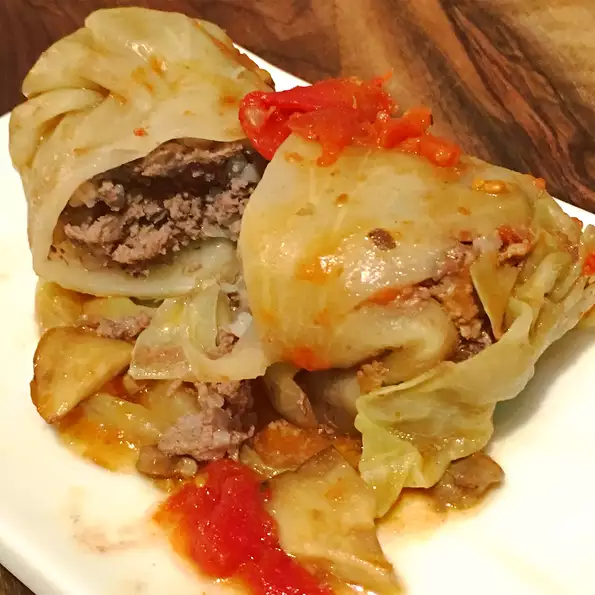

Grandma's recipe.
This recipe is easier to do in large batches since the prep is time-consuming.
I double or triple the recipe and bake them in a electric roasting pan.
I freeze any extras and when they come out of the freezer,
they taste even better because the cabbage has gotten more tender.
My Grandma made these with various combinations of beef, veal, and pork and was always experimenting to get them right.
I typed this up based on her notes but she cooked like I do.
Experiment with the meats and the flavors until you get something you like.
I like to mix up the type of spices I use, sometimes they are more plain with just the marjoram or sometimes I use Italian seasoning
Ingredients
- 2 heads cabbage, cored
- 2 tablespoons margarine
- 2 onions, diced
- 4 pounds ground beef
- 2 (10.5 ounce) cans chicken with rice soup
- 2 cups rice
- 2 eggs
- 1 teaspoon dried marjoram, or to taste
- salt and ground black pepper to taste
- 1 (10.75 ounce) can golden mushroom soup
Directions
- Preheat oven to 350 degrees F (175 degrees C).
- Bring a large pot of water to a boil. Boil cabbages until leaves are falling off. Remove leaves from water as they peel off and set aside.
- Melt margarine in a large skillet. Cook onions in margarine until translucent, 5 to 7 minutes.
- Mix cooked onions, ground beef, chicken with rice soup, rice, eggs, marjoram, salt, and pepper in a bowl.
- Take a cabbage leaf, lay it flat, and trim the thickest part towards the bottom of the leaf to make it easier to roll; repeat with all leaves. Take the darker outside leaves and line the bottom of the roasting pan with them.
- Scoop a portion of the beef meat mixture into a leaf and wrap the leaf around the mixture, enveloping the meat completely. Repeat until all of the beef mixture is used. Arrange the stuffed cabbage leaves into the roasting pan. Top with any remaining cabbage leaves. Cover the roasting pan with aluminum foil.
- Bake in preheated oven for 1 hour 45 minutes. Remove aluminum foil, peel back the top layer of extra cabbage leaves, and pour golden mushroom soup over the stuffed cabbage leaves. Replace top cabbage leaves, return roasting pan to oven, and continue baking until the soup is hot, about 15 minutes.
Return to top
Return to main page